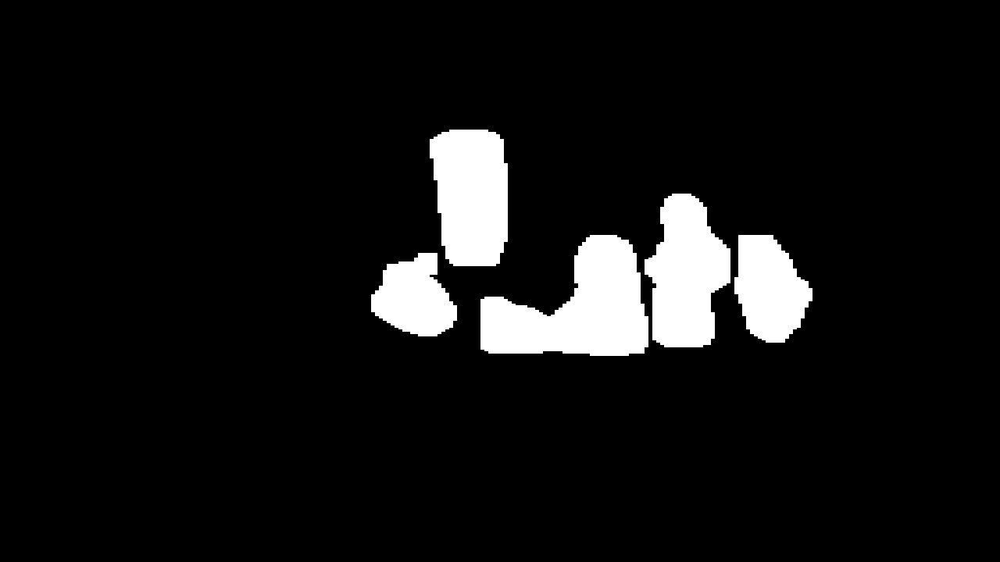
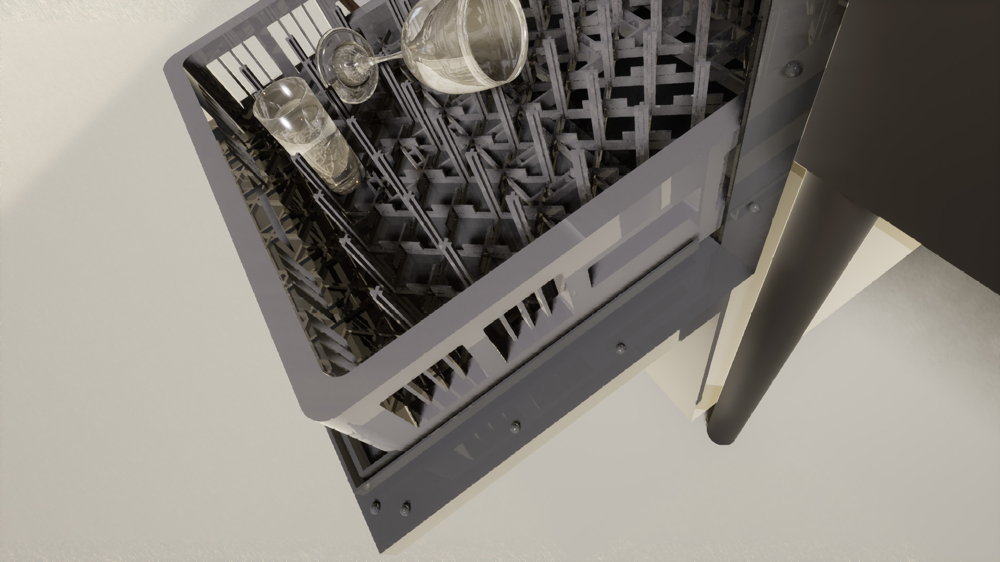

Abstract
We propose a technique for depth completion of transparent objects using augmented data captured directly from real environments with complicated geometry. Using cyclic adversarial learning we train translators to convert between painted versions of the objects and their real transparent counterpart. The translators are trained on unpaired data, hence datasets can be created rapidly and without any manual labelling. Our technique does not make any assumptions about the geometry of the environment, unlike previous SOTA systems that for example assume easily observable occlusion and contact edges. We show how our technique outperforms a SOTA approach, ClearGrasp, that is not trained on environments that have complicated geometry and makes assumptions about the structure of the environment which makes it less applicable for this scenario. We show how the technique can be used to create an object manipulation application with a robot in a dishwasher environment.
Acknowledgements
This work was supported by JST [Moonshot R&D][Grant Number JPMJMS2031]. This research is subsidized by New Energy and Industrial Technology Development Organization (NEDO) under a project JPNP20016. This paper is one of the achievements of joint research with and is jointly owned copyrighted material of ROBOT Industrial Basic Technology Collaborative Innovation Partnership.
We evaluated U-Net and ResNet with 9 residual blocks on both the Depth and RGBD modalities.
| Network | Parameters (generator) | Parameters (discriminator) | RMSE (m) ↓ | MAE (m) ↓ | Rel ↓ | 1.05 ↑ | 1.10 ↑ | 1.25 ↑ |
|---|---|---|---|---|---|---|---|---|
| RGBD-U-Net | 218,007,172 | 11,165,441 | 0.061 | 0.040 | 0.072 | 0.528 | 0.767 | 0.940 |
| RGBD-ResNet | 35,282,828 | 11,165,441 | 0.092 | 0.074 | 0.135 | 0.250 | 0.482 | 0.853 |
| Depth-U-Net | 217,997,953 | 11,162,369 | 0.058 | 0.035 | 0.061 | 0.589 | 0.861 | 0.954 |
| Depth-ResNet | 35,264,003 | 11,162,369 | 0.145 | 0.128 | 0.229 | 0.113 | 0.232 | 0.581 |
We compare RGBD-U-Net to ClearGrasp, ClearGrasp-Dishwasher (ClearGrasp with Transfer Learning based on our environment, see below) and Joint Bilateral Filter.
| Method | RMSE (m) ↓ | MAE (m) ↓ | Rel ↓ | 1.05 ↑ | 1.10 ↑ | 1.25 ↑ |
|---|---|---|---|---|---|---|
| ClearGrasp | 0.125 | 0.092 | 0.161 | 0.311 | 0.476 | 0.747 |
| ClearGrasp-Dishwasher | 0.140 | 0.111 | 0.193 | 0.188 | 0.314 | 0.661 |
| JBF | 0.067 | 0.048 | 0.083 | 0.477 | 0.688 | 0.950 |
| Ours (RGBD-U-Net) | 0.061 | 0.040 | 0.072 | 0.528 | 0.767 | 0.940 |
| Sample ID | Input Color | Input Depth | Ours (RGBD-U-Net) | ClearGrasp | Joint Bilateral Filter | Ground truth depth |
|---|---|---|---|---|---|---|
| Three validation examples with the lowest masked MAE using our method | ||||||
| 23 |  |
|||||
| 14 | ||||||
| 24 |  |
|||||
| Three validation examples with the highest masked MAE using our method | ||||||
| 4 |  |
|||||
| 9 | ||||||
| 8 | ||||||
While not a main goal of this research, our method also shows promise for detecting the depth of previously unseen objects. The following table shows the results on scenes with novel objects. Qualitative results can be found here.
| Sample ID | RMSE (m) ↓ | MAE (m) ↓ | Rel ↓ | 1.05 ↑ | 1.10 ↑ | 1.25 ↑ |
|---|---|---|---|---|---|---|
| 0 | 0.061 | 0.040 | 0.067 | 0.566 | 0.777 | 0.953 |
| 1 | 0.052 | 0.032 | 0.054 | 0.662 | 0.850 | 0.962 | 2 | 0.046 | 0.029 | 0.050 | 0.650 | 0.882 | 0.958 | 3 | 0.049 | 0.035 | 0.066 | 0.467 | 0.816 | 0.971 | 4 | 0.055 | 0.037 | 0.064 | 0.542 | 0.777 | 0.971 | 5 | 0.046 | 0.028 | 0.050 | 0.687 | 0.880 | 0.964 | Mean | 0.052 | 0.034 | 0.059 | 0.600 | 0.830 | 0.964 |
To get an impression of how ClearGrasp fails on our validation set, we included the generated boundaries, masks and surface normals for the above qualitative results. Cross-reference with the table above using the Sample ID.
| Sample ID | Boundaries | Masks | Surface Normals |
|---|---|---|---|
| 23 | |||
| 14 | |||
| 24 | |||
| 4 | |||
| 9 | |||
| 8 |  |
Is it possible that ClearGrasp underperforms due to our data being significantly different from their training data? To evaluate this, we trained ClearGrasp's boundary detection network, masks network and surface normals network for 100 iterations on data generated using SuperCaustics. Click on an image to enlarge:
|  |
We re-evaluated ClearGrasp using the retrained boundary detection and masks networks. The retrained surface normals network was not used as it performed significantly worse than ClearGrasp's original surface boundary network. It should be noted that we aimed to spend a similar amount of time on creating the simulation assets as we spend on recording the training data for our method. It took around three days to produce the assets (glasses, dishwasher, side shelves), whereas our training data was captured within a day. Retraining ClearGrasp using this domain specific data however did not result in any improvement.
{kind=link}
{kind=link}
{kind=link}
{kind=link}
{kind=link}
{kind=link}
{kind=link}
{kind=link}
{kind=link}
{kind=link}
{kind=link}